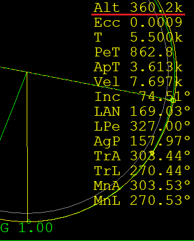
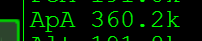
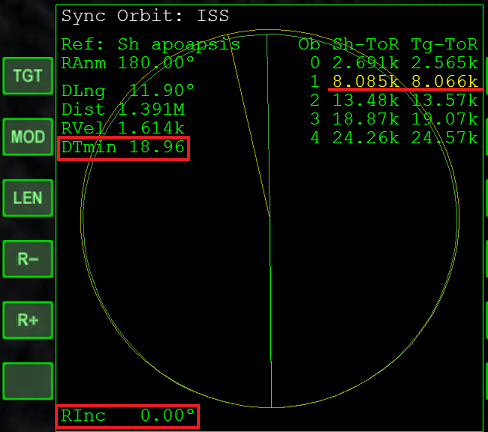

Sync Orbit MFDの補足解説
Sync Orbit MFDは、Orbiterで宇宙船をランデブーさせるためのMFDです。
ランデブーの手順
ターゲットの下からランデブーする場合について説明しています。
上からランデブーする場合は、Ap（Apoapsis = 遠地点）をPe（Periapsis = 近地点）に置き換えてください。
軌道面を一致させる
Align planes MFDを使ってターゲットと軌道面を一致させる。
Align planes MFDの補足解説
遠地点を作る
この作業にはOrbit MFDを使う。
Ap（遠地点＝高度が一番高くなる点）を作る。
適当な場所でProgradeオートパイロットで機首を進行方向に向けて加速する。
このApはターゲットの軌道より低くなるようにする。
Orbit MFDのApAの数字が、Apの高度を表している。
自分のAp（中が空の緑の丸）を通る時のターゲットの高度を確認する。

自分のApの高度を同じにする。
PeでProgradeオートパイロットで機首を進行方向に向けて加速する。

DTminをゼロにする
Sync Orbit MFDを起動して、TGTをクリックしてターゲットの名前を入力する。
MODを何度かクリックして、Sh apoapsisにする。
（Ship apoapsis = 自機の遠地点モード）

自機がApに移動するのを待つ。
Apが近づいてきたら、Progradeオートパイロットで機首を進行方向に向ける。
Apに到着したら、DTminをゼロにする。
RCS LIN（テンキーの6か9）で前か後ろのどちらかに加速する。
どちらかわからないときは、適当に押してみてダメだったら逆を押す。
| DTmin | 自機とターゲットのランデブー地点への到着時刻のずれのうち、設定した範囲内※で最小のもの。 |
| Sh-ToR | 自機がランデブー地点に到着するまでの時間。 |
| Tg-ToR | ターゲットがランデブー地点に到着するまでの時間。 |
| RInc | 自機とターゲットの軌道面のずれ。Align MFDで修正する。 |
※LENボタンでリストに表示される数を増やすことができる。
LENをクリック→任意の数字（最大で19）を入力→Enterを押す。
ランデブー
Sync Orbit MFDに黄色で表示されているのが最接近するタイミング。
これがゼロに近づくのを待つ。
十分接近したら、Docking HUDを使って速度を合わせる。
注意点
Sync Orbit MFDでは、「ターゲットと自機の高度のずれ」までは表示されない。
DTminがゼロになっていても、Apの高度とターゲットの高度が一致していないとランデブーできないことになる。
あらかじめOrbit MFDを使って、自分のApをターゲットの高度と合わせておく。
RInc（ターゲットとの軌道面のずれ）は左下に表示されている。
この数字が大きいとランデブーが難しくなる。
Align planes MFDを使って、できるだけ値を小さくしておく。
Non spherical gravityのオプションが有効になっていると、Apの位置と高度が正確に表示されなくなる。
ランデブーの難易度が大幅に上がるため、無効にすることを勧める。
Sync Orbit MFDの長所
Sync Orbit MFDを使えば、ApとPeが離れた軌道でもランデブーできます。
ロケットを使って軌道上に宇宙船を打ち上げるとき、ロケットは相反するふたつの目的を同時に達成する必要があります。
まず、打ち上げが終わったロケットは大気圏に再突入させて燃やしてしまう必要があります。
それと同時に、ロケットは積んでいる宇宙船をできるだけ目標軌道の近くまで運ばなくてはなりません。
打ち上げが終了した時点で、Peは大気圏内に、Apは目標軌道近くに届くようにすれば、ふたつの目的を満たすことができます。
このような軌道からそのままランデブーする場合、Sync Orbit MFDが一番適しているということになります。